Pasporty slovenských měst: bez pasportu (nahoře, modře) a s pasportem (dole, červeně)
Řez zleva (A) doprava (B), ±10 m podél ulice, 10 px = 1 m. Silné čáry = okraje vozovky, tenké = ostatní hranice, žlutá = střed řezu, * = odhad. Ortofoto © GKÚ Bratislava, NLC (ZBGIS, CC BY 4.0).
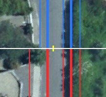
3 · Na Slavíne (bratislava)
bez doplnění: chodnik 1.5 · pruh 3.3 · parkovani 1.6 · chodnik 1.85
s doplněním: chodnik 3.75 · pruh 3.3 · parkovani 1.6 · chodnik 1.85
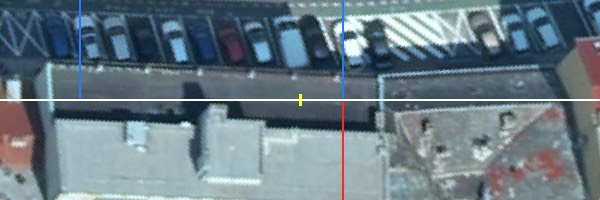
17 · (bez názvu) (bratislava)
bez doplnění: chodnik 26.33
s doplněním: chodnik 40.9
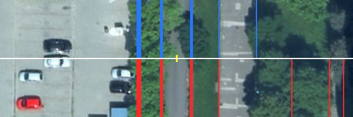
26 · (bez názvu) (dubravka)
bez doplnění: parkovani 0.35 · nezname 3.7 · parkovani 5.05 · nezname 4.7 · chodnik 6.4
s doplněním: parkovani 0.35 · chodnik 3.65 · parkovani 5.1 · zelen 4.7 · chodnik 12.4 · zelen 6.45 · chodnik 2.4 · zelen 3.8
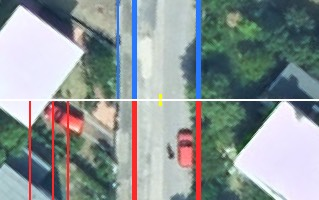
27 · Brižitská (dubravka)
bez doplnění: chodnik 1.55 · pruh 6.4
s doplněním: chodnik 2.35 · plocha 1.4 · chodnik 6.6 · pruh 6.4
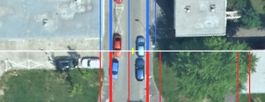
28 · Sekurisova (dubravka)
bez doplnění: chodnik 2.05 · pruh 3.6 · pruh 3.6 · chodnik 1.6
s doplněním: chodnik 2.05 · pruh 3.6 · pruh 3.6 · chodnik 2.45 · zelen 15.2 · chodnik 2.3
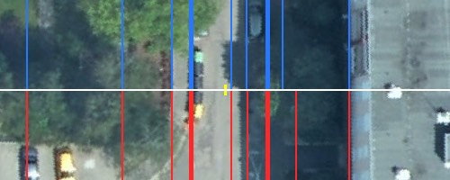
30 · Fedákova (dubravka)
bez doplnění: chodnik 10.57 · nezname 5.5 · chodnik 2.1 · pruh 4.5 · krajnice 1.7 · parkovani 2.35 · chodnik 1.65 · nezname 7.4
s doplněním: chodnik 10.57 · nezname 5.5 · chodnik 2.1 · pruh 4.5 · krajnice 1.87 · parkovani 2.18 · chodnik 3.2 · zelen 5.85
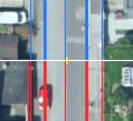
31 · Popovova (dubravka)
bez doplnění: chodnik 2.3 · pruh 3.45 · pruh 3.45 · chodnik 2.6
s doplněním: nezname 0.35 · chodnik 2.3 · pruh 3.45 · pruh 3.45 · chodnik 2.6
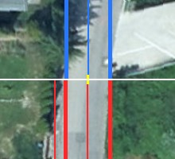
32 · Plachého (dubravka)
bez doplnění: pruh 2.77 · pruh 2.77
s doplněním: chodnik 1.3 · pruh 2.82 · pruh 2.82
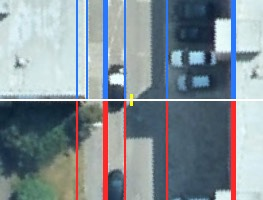
36 · Gallayova (dubravka)
bez doplnění: nezname 1.05 · chodnik 1.8 · krajnice 1.97 · pruh 4.2 · parkovani 6.58
s doplněním: chodnik 2.85 · krajnice 1.97 · pruh 4.2 · parkovani 6.58
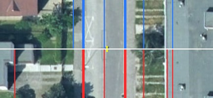
37 · Tranovského (dubravka)
bez doplnění: chodnik 2 · pruh 4.27 · pruh 4.27 · chodnik 3.8 · nezname 5.85
s doplněním: chodnik 13.9 · pruh 4.27 · pruh 4.27 · chodnik 3.8 · zelen 4.75 · chodnik 1.1
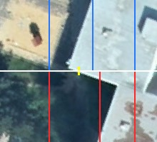
40 · (bez názvu) (dubravka)
bez doplnění: chodnik 6.1 · nezname 5.95
s doplněním: chodnik 7.15 · zelen 4.9
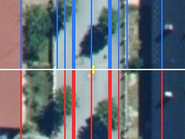
44 · Fučíkova (presov)
bez doplnění: nezname 5.2 · chodnik 1.12 · stromorad 1.18 · pruh 2.62 · pruh 2.62 · stromorad 1.28 · chodnik 1.22 · nezname 4.95
s doplněním: chodnik 6.32 · stromorad 1.18 · pruh 2.62 · pruh 2.62 · stromorad 1.28 · chodnik 6.17
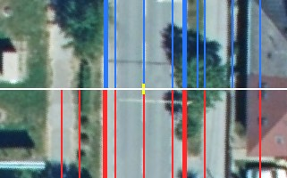
47 · 17. novembra (presov)
bez doplnění: cyklopruh 1.07 · pruh 3.2 · pruh 3.2 · cyklopruh 1.27 · stromorad 1.5 · nezname 0.8 · chodnik 3.1 · nezname 3.1
s doplněním: chodnik 2 · zelen 2.85 · cyklopruh 1.17 · pruh 3.2 · pruh 3.2 · cyklopruh 1.27 · stromorad 2.3 · chodnik 6.2
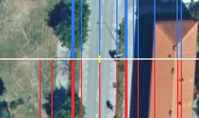
48 · 17. novembra (presov)
bez doplnění: cyklopruh 1.52 · pruh 3.1 · pruh 2.88 · cyklopruh 1.5 · stromorad 1.3 · nezname 0.85 · chodnik 2.8 · zelen 3.8 · nezname 0.65
s doplněním: chodnik 2 · stromorad 3.5 · cyklopruh 1.52 · pruh 3.1 · pruh 2.88 · cyklopruh 1.5 · stromorad 2.15 · chodnik 2.8 · zelen 3.85 · plocha 0.6
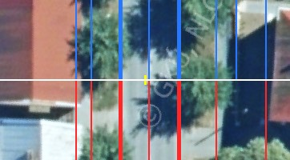
54 · Plzenská (presov)
bez doplnění: chodnik 1.95 · stromorad 3.6 · pruh 3.62 · pruh 3.62 · stromorad 4.75 · chodnik 2.45 · nezname 3.7
s doplněním: chodnik 1.95 · stromorad 3.6 · pruh 3.62 · pruh 3.62 · stromorad 4.75 · chodnik 6.15
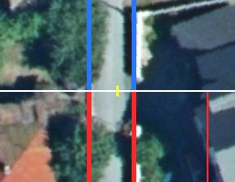
55 · Letná (presov)
bez doplnění: pruh 4.9
s doplněním: pruh 4.9 · chodnik 8.05
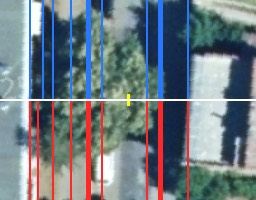
57 · Janka Borodáča (presov)
bez doplnění: nezname 1.25 · stromorad 1.05 · chodnik 1.82 · stromorad 1.68 · krajnice 1.35 · pruh 4.5 · krajnice 1.35 · chodnik 2.75
s doplněním: plocha 0.8 · stromorad 1.5 · chodnik 1.82 · stromorad 1.68 · krajnice 1.35 · pruh 4.5 · krajnice 1.35 · chodnik 2.75
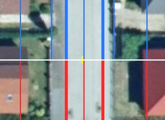
63 · Petőfiho (presov)
bez doplnění: nezname 5.25 · chodnik 2.35 · pruh 3.05 · pruh 3.05 · chodnik 1.9 · nezname 5.5
s doplněním: chodnik 7.6 · pruh 3.05 · pruh 3.05 · chodnik 7.4
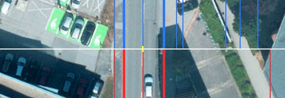
69 · Vojtecha Spanyola (zilina)
bez doplnění: chodnik 1.85 · pruh 3.97 · pruh 4.13 · chodnik 2.6 · nezname 1.3 · chodnik 8.75 · nezname 2.9 · chodnik 3.6
s doplněním: chodnik 1.85 · pruh 3.97 · pruh 4.13 · chodnik 21.6
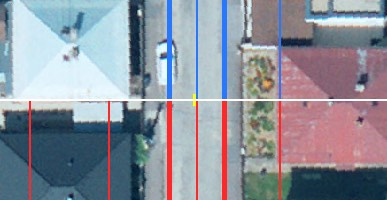
72 · Potočná (zilina)
bez doplnění: pruh 2.77 · pruh 2.77 · nezname 5.55
s doplněním: plocha 7.85 · chodnik 6.05 · pruh 2.77 · pruh 2.77 · chodnik 5.55
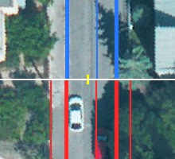
73 · Na Šefranici (zilina)
bez doplnění: pruh 3.77 · krajnice 2.43
s doplněním: chodnik 1.9 · pruh 3.87 · krajnice 2.43 · chodnik 1.8
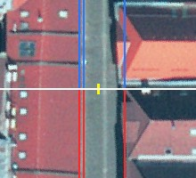
77 · Hodžova (zilina)
bez doplnění: nezname 0.5 · plocha 4.55
s doplněním: chodnik 0.45 · plocha 4.6
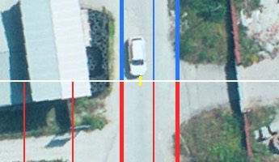
80 · Cestárska (zilina)
bez doplnění: pruh 3.98 · pruh 2.86
s doplněním: plocha 5.95 · chodnik 6 · pruh 4.04 · pruh 2.86
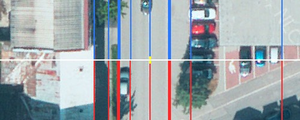
84 · Framborská (zilina)
bez doplnění: chodnik 2.35 · nezname 1.7 · parkovani 2 · pruh 3.22 · pruh 3.22 · chodnik 3.55 · plocha 15.23
s doplněním: chodnik 2.35 · zelen 1.65 · parkovani 2 · pruh 3.25 · pruh 3.25 · chodnik 3.55 · plocha 15.23
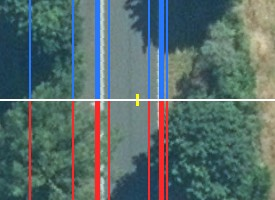
94 · (bez názvu) (bystrica)
bez doplnění: zelen 4.32 · chodnik 2.4 · krajnice 1.17 · pruh 4 · krajnice 1.17 · nezname 0.6
s doplněním: zelen 4.32 · chodnik 2.4 · krajnice 1.2 · pruh 4 · krajnice 1.2 · chodnik 0.55
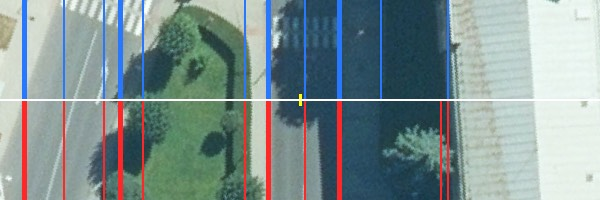
96 · Československej armády (bystrica)
bez doplnění: chodnik 3.4 · pruh 4 · pruh 4 · krajnice 1.65 · chodnik 2.25 · zelen 10.2 · chodnik 2.3 · pruh 3.77 · pruh 3.33 · chodnik 4.2 · nezname 6.7
s doplněním: chodnik 3.4 · pruh 4 · pruh 4 · krajnice 1.65 · chodnik 2.25 · zelen 10.2 · chodnik 2.3 · pruh 3.77 · pruh 3.33 · chodnik 10.2 · zelen 0.7
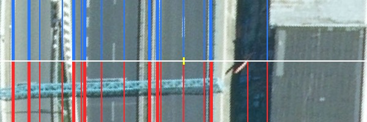
107 · R1 (bystrica)
bez doplnění: pruh 3.62 · pruh 3.62 · nezname 2.55 · krajnice 1.8 · pruh 3.75 · krajnice 1.8 · zelen 1.3 · nezname 0.45 · pruh 2.88 · pruh 3.7 · pruh 4.08 · nezname 1.25 · krajnice 0.67 · pruh 3.7 · pruh 3.4 · krajnice 0.98 · nezname 9.25
s doplněním: pruh 3.62 · pruh 3.62 · nezname 2.55 · krajnice 1.8 · pruh 3.75 · krajnice 1.8 · zelen 1.3 · nezname 0.45 · pruh 2.88 · pruh 3.7 · pruh 4.08 · nezname 1.25 · krajnice 0.67 · pruh 3.7 · pruh 3.4 · krajnice 1.03 · chodnik 6 · plocha 3.2